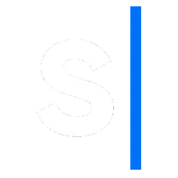

SNGULAR
(opens in a new tab) Sep 2008 – present · Oviedo and RemoteHead of Talent Growth & Training
Feb 2025 – present · RemoteThe Talent Growth unit is responsible for developing the company's internal and external talent. From helping our colleagues complement each other so they can grow, to making Sngular a place where external talent wants to join. We act as a bridge between the technical leadership of the Chapters and the delivery units, helping each person move forward on their own path by complementing one another.
I am also responsible for OS³ (Office of Strategic Services of Sngular), an initiative of the TG department that manages and supports people in transition (without a full client assignment). It is a place where we coordinate initiatives so that people have somewhere to share knowledge, improve and embrace good practices the Sngular way.
I also run the Training department, where we focus on training courses, requests from the personal training budget and a range of topics related to learning and continuous improvement.
Finally, I am part of the operations team, which looks for the best fit for each available person among the opportunities we have open at any given time.
Engineering Manager at OS³
Jan 2023 – Jan 2025 · RemoteOffice of Strategic Services of Sngular (OS³) is an initiative of the Talent Growth department that manages people in transition (without a full assignment) within Sngular. It is a place where we coordinate a number of Open Source projects (released or incubated) so that different profiles have somewhere to share knowledge, improve and embrace good practices the Sngular way.
As part of the OS³ staff, we coordinate the different projects, support the participants and work on the continuous improvement of our processes.
Senior Technical Manager
Mar 2019 – Jan 2023 · Oviedo areaTechnical Manager on agile projects using the Scrum methodology: planning and task allocation, estimates, coordination between teams and task tracking, deployments to pre-production environments, functional analysis, client relations, documentation...
Software architect, producing the technical designs of projects in their initial phase, or of complex tasks, to be developed by myself or by others.
Development of solutions with C# 4.5.2. Web development using MVC4 (ASP.NET and Razor), Entity Framework, Dependency Injection (Unity, Castle Windsor), Inversion of Control, Enterprise Library, Lambda, AWS and Angular 6.
Technical Manager
Mar 2017 – Feb 2019 · Oviedo areaTechnical Manager on agile projects using the Scrum methodology: planning and task allocation, estimates, coordination between teams and task tracking, deployments to pre-production environments, functional analysis, client relations, documentation...
Software architect, producing the technical designs of projects in their initial phase, or of complex tasks, to be developed by myself or by others.
Development of solutions with C# 4.5.2. Web development using MVC4 (ASP.NET and Razor), Entity Framework, Dependency Injection (Unity, Castle Windsor), Inversion of Control, Enterprise Library, Lambda, AWS, Angular 6 and AngularJS.
Technical Area Leader
Feb 2015 – Mar 2017 · OviedoProject Manager on agile projects using the Scrum methodology: planning and task allocation, estimates and task tracking, functional analysis, client relations, documentation...
Software architect, producing the technical designs of projects in their initial phase, or of complex tasks, to be developed by myself or by others.
Development of solutions with C# 4.0 and 4.5.2 (both web and components). Web applications using MVC3 and MVC4 (ASP.NET and Razor), Entity Framework, Dependency Injection (Unity, Castle Windsor), Inversion of Control, Enterprise Library, Angular 1 and jQuery.
Development of a search client for the Elasticsearch engine using NEST and C# 4.5.
Development of solutions with Java 1.7 using Spring MVC, MySQL with Hibernate, and client-side and server-side templating with Mustache and mustache.js.
Development of web services using PHP and MySQL, or .NET with WCF (SOAP, REST, XML...).
Technical Reference Leader
Jan 2010 – Feb 2015 · Oviedo areaProject Manager: planning, estimates, task allocation and tracking, functional analysis, client relations, documentation...
Software architect, producing the technical designs of projects in their initial phase, or of complex tasks, to be developed by myself or by others.
Development of solutions with C# 4.0 and 4.5.1 (both web and components). Use of MVC3 and MVC4 with ASP.NET (and Razor), Entity Framework, Dependency Injection, Inversion of Control and jQuery.
Development of a search client for the Elasticsearch engine using NEST and C# 4.5.
Development of solutions with Java 1.7 using Spring MVC, MySQL with Hibernate, and client-side and server-side templating with Mustache and mustache.js.
Development of web services using PHP and MySQL, or .NET with WCF (SOAP, REST, XML...).
Development of iPad and iPhone applications with Objective-C (Cocoa).
Administration of Linux (Debian) and Windows (2003, 2008) servers.
Senior Software Developer
Sep 2008 – Jan 2010 · Oviedo areaDevelopment of portlets for Liferay portals (J2EE + Spring + Struts + Hibernate + Velocity).
Development of solutions in C# 3.5 environments (both web and components).
Digital signature systems, certificate validation and revocation, and digital stamping of PDFs.
Deployment, migration and development of the application for the regional Association of Architects.
Analysis, estimates and development of PHP applications.